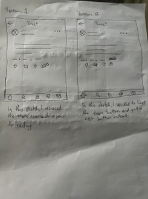
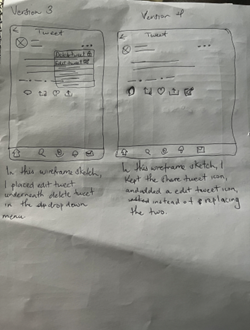
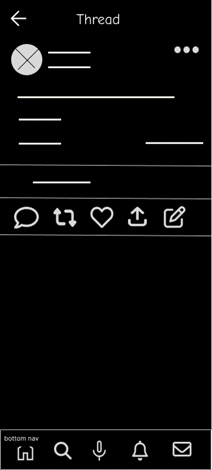
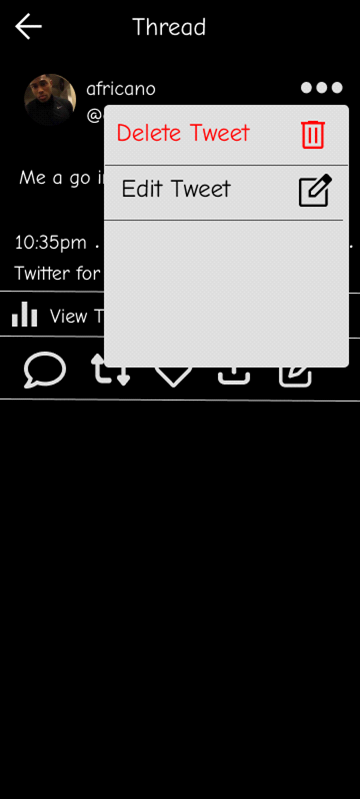

I came across an article, The Top 10 Social Media Sites & Platforms 2022, found here: The Top 10 Social Media Sites & Platforms 2022. This article ranked Twitter as 10th most popular social media site. As a UX designer, I am going to think of problems that might have Twitter ranked as number 10. However, my new design has to be based on user research and not my own assumptions.
I went out to find out exactly why users are preferring other platforms over Twitter. I was the sole UX designer for this project and was responsible for every stage of the design process.
My name is Tah J Gordon, an UX designer and this is my case study on Twitter.I used the Design Thinking method for this project as it is user-centered and that is the most important aspect of UX design.
I conducted user research and conducted a interview of 5 professional individuals who are between the ages of 17-30 in the United States who have Twitter accounts. My research goal was to figure out why people were not using Twitter enough. I wanted to see if they are any gaps in the market surrounding social media platforms.
Based on my direct interview with users, I got first hand experience of their pain points. I got the chance to see, feel and hear users and this put me in a better position to empathize with them.
Based on my research, I created a persona to better understand the needs of the users I interviewed. This persona would represent the larger group of users and their experiences with the platform in question
Based on the user persona I created, I crafted a user story to define user needs. A user story tells me who the user is, what they need and why they need it. This helps me put the user needs into the fore front of the design and that is the most important thing in UX design. I crafted one user story to define user needs.
As a upcoming journalist(who the user is) I want to edit my posts and comments(what the user needs) so that I can craft error free, misinformed stories after pressing the post button(benefit for the user).
This user story tells me exactly what the user needs and that is: the ability to edit their posts and comments.
As previously mentioned, from the user interview I conducted, I made sure to jot down key notes of users experiences and then created a affinity map to identify pain points and to later find out what is the most important feature to focus on right now.
Based on my affinity mapping and user interview, it was clear to me what user pain points I needed to focus on and what was most important. Most users observations were primarily about editing content on the platform.
5/5 users needed to edit their posts and content but could not because this feature is missing and present in other social media platforms which is one reason why Twitter falls number 10 on the most used social media platforms. I found this out by conducting a rough competitive audit and compared what other platforms have that Twitter does not have.
The problem statement: Users who share tons of information everyday need to be able to edit their content so that they have error free and informed content.
I decided to tackle two pain points for this project.
Pain Point 1: Users need edit posts after making a post
Currently, there is no button to edit a posts on Twitter after publishing.
Here is an example of a post on Twitter. After clicking the ellipsis in the top right corner, looking at the drop down menu, there is no option to edit the post. 5/5 users had a issue with this.
Pain Point 2: Users can't edit their comment
Here, we have a comment "Good luck!". Again, the ellipses is clicked, and in the drop down menu, there is no way to edit the comment. These are the pain points my design will set about to fix.
It is time to ideate and to come up ideas so I did the How Might We? method. After asking myself several How We Might We questions. It was obvious to me that I needed to add a button to edit the post and to also add a button to edit the comments. So, I sketched some ideas on a paper of a wireframe to allow users to edit posts.
 I decided to make version 4 into a digital wireframe and made a low fidelity prototype.
This is just the main screen of my low fidelity prototype. You can view my low fidelity prototype here.
I have a functional low fidelity prototype, I decided that I need to conduct some design research to ensure I am meeting user's needs while designing and overall, it is much better to test concepts early.
I conducted a moderated guerrilla usability test at a local store with 5 participants. My research goal was to find out if the new design is meeting users needs so far before I put anymore time and effort in creating a high fidelity design. Users had just one prompt find a post and edit it. To measure the progress, my key performance indicator was conversation rates to see if they could complete the tasks. This would let me know if the edit post button is in the right place(again, I wante to know how best to craft my design to help the user). From my observations and note taking, the conversation rate was 2/5. While users were grateful to edit their posts, most users could not actually edit the post. To better understand this new found pain point within my design, I decided to create a user flow chart because that was the issue, the navigation in the app to edit the post.
As you can see here to edit a post, most users clicked the ellipsis instead of clicking the edit icon beside the share icon. The user flow ended right there. This is a major issue for my design and I found it early. It seemed users were expecting to find "Edit post" inside of the drop down list when you click the ellipsis, instead of it being an icon. It does make sense because that's where you can also find "Delete post" and that is consistent with Twitter's layout. To conclude, my next iteration I will put the "Edit post" inside of the drop down that can be found when a user clicks the ellipsis.
I have created a high fidelity prototype and this is my final product.
As you can see "Edit tweet" is added to the drop down list.
Now, since I've iterated with user's needs in mind. It is time to start another round of usability testing.
This was another moderated guerilla usability test with 5 participants. My goal was the same to see if user's could edit the post this time around. I measured progress by conversation rates again. I gave these set of people the same set of tasks, I had before, view the post and edit it. Here's an overview of how these design changes performed.
As you can see, this usability testing was a success. User's conversation rate improved and users are now happy that they can edit their post.
Check it out for yourself.
This is my first case study and I learned a lot of how iterative the design process can be. It was challenging for me to interview people because I felt as though I was taking up their time and I did not compensate them because I couldn't. And to think I did that twice. But people were nice and had the patience and I got the results I needed. I realize that people love Twitter, but it was just missing a few more things to make it a complete social platform. This was a fun experience and I love the problem solving. The next steps would be to focus on pain point #2: editing comments.
Note: I am not affiliated with Twitter. I just love the app and want to see it do better.